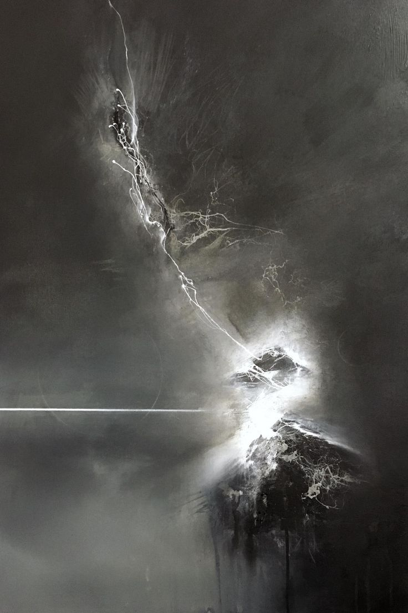

Era o seară liniștită de primăvară. Scaunul rece de pe balcon mă aștepta iar.
Să mă întâmpine, să fie alături de mine și la bine... și la rău.
Lumânarea de pe masă este stinsă ca de obicei da către fiorul nopții.
Sunt iarăși eu... citindu-mi cartea, acompaniat de o cană de ceai
Toate aceste lucruri sunt alături de mine, nu au să ma părăsească...
Dar totuși... ceva părea diferit; luminile stradale erau stinse, am rămas numai eu
Și cu priveliștea minunatei luni în oceanul ce se ivea în fața balconului meu...
Luna... un lucru atât de frumos... pe care nu îl pot avea.
Dar totuși rămâne lângă mine, îmi ține companie...
Asemeni ei, asemeni sufletului ei...
Această noapte este diferită. Aerul este mai greu, chiar sufletul meu se simte mai greu...
Este bucurie? Este durere? Ce este... Ce este în sufletul meu cu adevărat..?
Dintr-odată, un trăsnet puternic răsună în crudul val de nori ce se apropie...
Cana îmi cade din mână.
S-a spart.
M-a părăsit.
Prin dansul stropilor de ploaie de pe balconul meu, se ivește o flacăra;
Îmi reaprinde lumânarea, iar aceasta arde...
Și tot arde...
Flacăra devine din ce în ce mai mare, cartea îmi ia foc, iar lumânarea rămâne fără suflare...
M-au părăsit și ele.
Cana, lumânarea, cartea, mă rugam să nu plece... dar totuși au facut-o.
Am rămas iar cu luna, dansând în tristețea nopții.
Un dans ușor, lent, ca atunci când ne-am întâlnit pentru prima oara
A trecut atât de mult timp... Dar totuși atât de puțin.
Speram să nu ma părăsești nici tu. Dar ușor ușor... te-ai lepădat de mine, ai plecat și tu.
Singur am rămas, dar acum lumina-ți strălucește și mai tare, oricât de departe ai
O obsesie din adâncul sufletului meu?
O frică a minții mele?
Care o fi problema ?
Problemele mele... Toate par că dispar atunci când tu le dai tăcere
Nu dorim singurătate, vreau să zburăm alături
Sa reflectez lumina ta, dar asta nu se poate...
Și așa strălucește soarele în fața mea:
Privind la el cu lacrimi în ochi, dar cu un zâmbet pe buze
Precum aș privi la ea.
Lumina mă orbește ușor ușor
Ușor îmi pierd vederea, doar un vid negru mai rămâne
Iar eu iar
Rămas-am singur...
